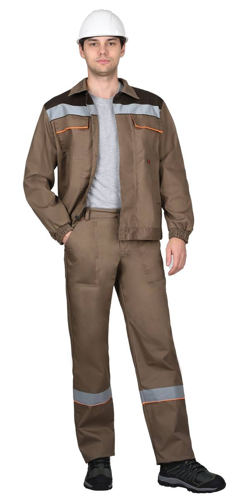
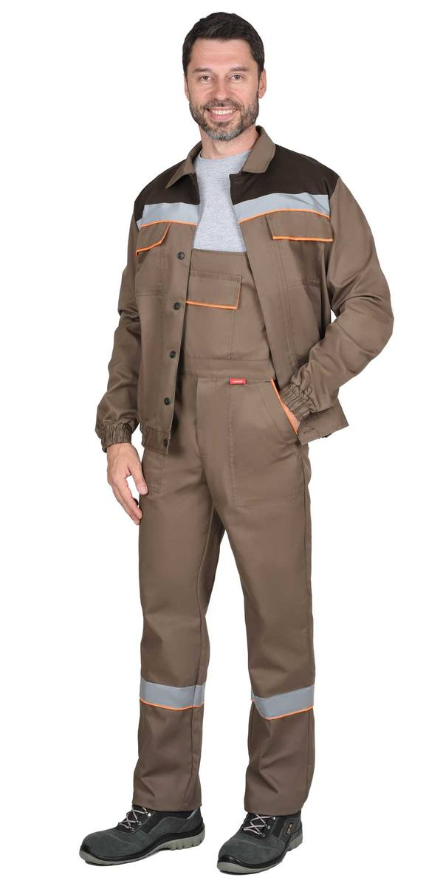
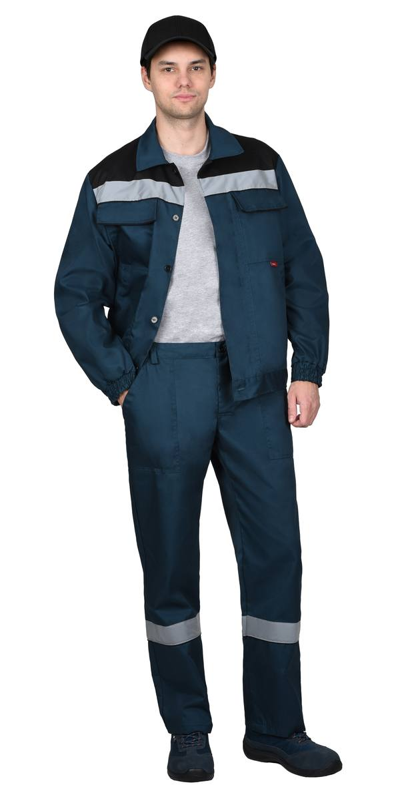
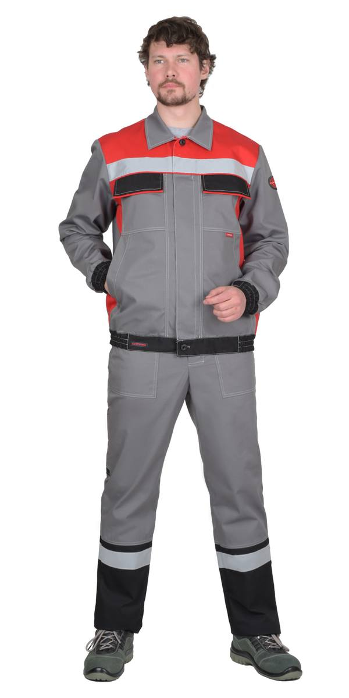
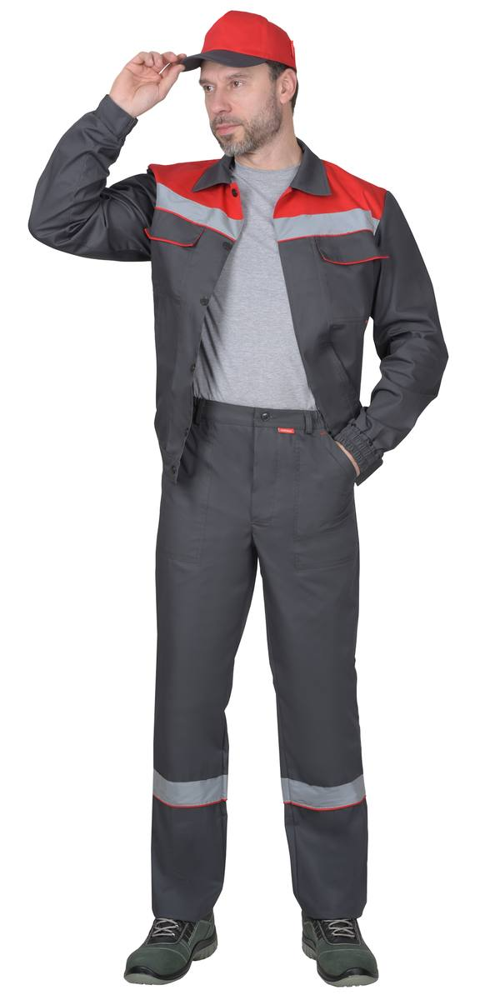
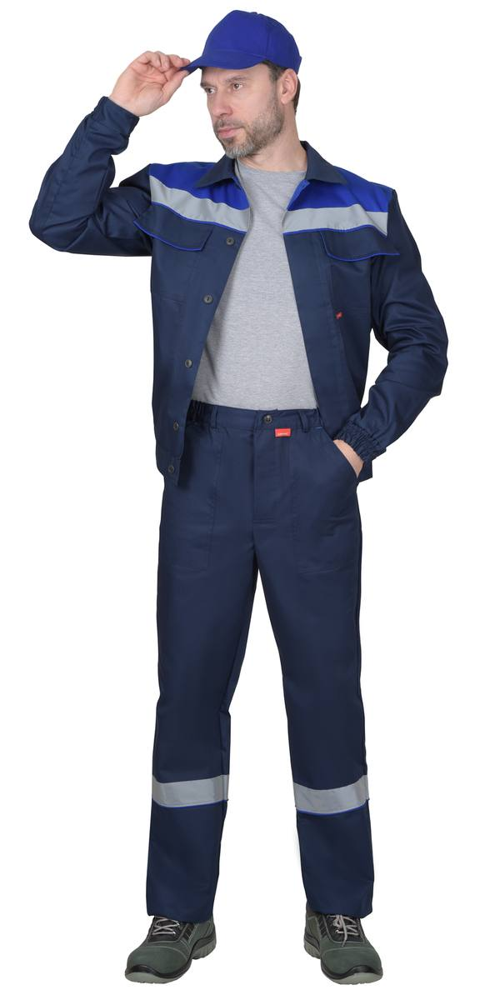
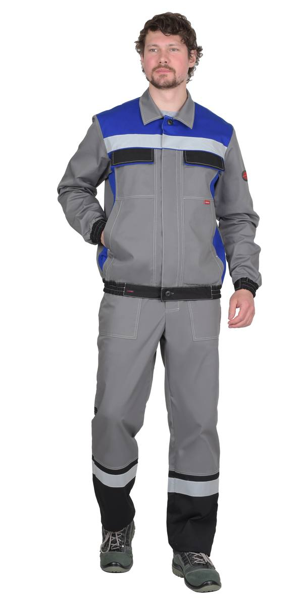
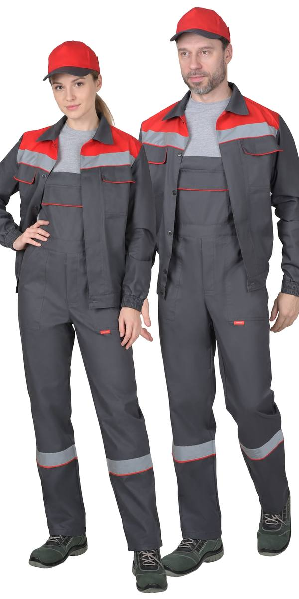
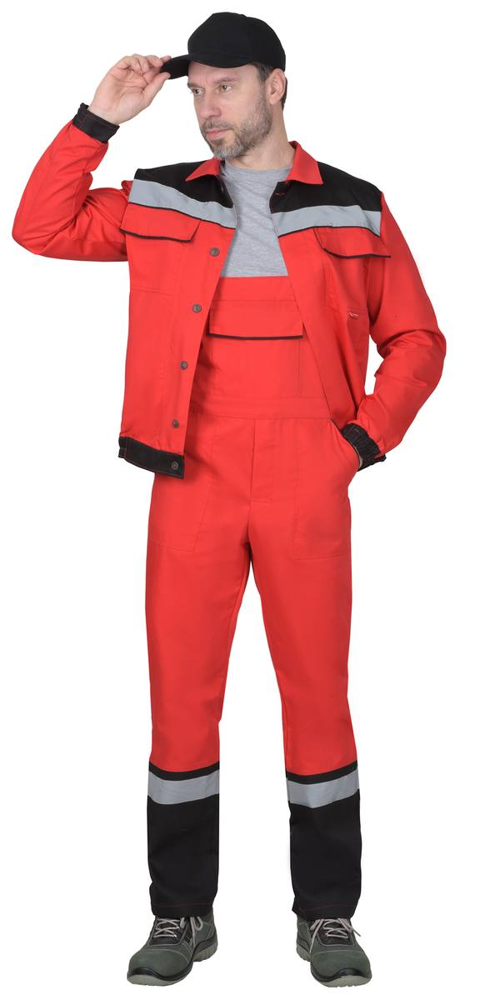

Костюм лет:куртка кор.,п/к.кофейный с т.-коричневым и оранж.кантом (ЧЗ)
Костюм летний: куртка кор., брюки морена с черным с СОП тк. Rodos (ЧЗ)
Костюм летний: куртка кор., брюки ср. серый с красным с СОП (Тк. Rodos) (ЧЗ)
Костюм летний: куртка кор., брюки темно-серый с красным с СОП (ЧЗ)
Костюм летний: куртка кор., брюки темно-синий с васильковым (ЧЗ)
Костюм летний: куртка кор., п/к ср. сер. с васильком с СОП (Тк. Rodos) (ЧЗ)
Костюм летний: куртка кор., п/комб. темно-серый с красным (ЧЗ)
Костюм летний: куртка кор., п/комб., красный с черным (ЧЗ)| Артикул | Вариант / цвет |
|---|---|
| 138857 | Костюм лет:куртка кор,брюки. кофейный с т.-коричневым и оранж.кантом с СОП (ЧЗ) |
| 110821 | Костюм лет:куртка кор.,п/к.кофейный с т.-коричневым и оранж.кантом (ЧЗ) |
| 142698 | Костюм летний: куртка длинная, брюки, т.синий с черным СВ кант (ЧЗ) |
| 164873 | Костюм летний: куртка кор., брюки морена с черным с СОП тк. Rodos (ЧЗ) |
| 147625 | Костюм летний: куртка кор., брюки ср. серый с красным с СОП (Тк. Rodos) (ЧЗ) |
| 138859 | Костюм летний: куртка кор., брюки темно-серый с красным с СОП (ЧЗ) |
| 117588 | Костюм летний: куртка кор., брюки темно-синий с васильковым (ЧЗ) |
| 147638 | Костюм летний: куртка кор., п/к ср. сер. с васильком с СОП (Тк. Rodos) (ЧЗ) |
| 1092600 | Костюм летний: куртка кор., п/комб. серый с красным (распродажа) (ЧЗ) |
| 109260 | Костюм летний: куртка кор., п/комб. темно-серый с красным (ЧЗ) |
| 3450 | Костюм летний: куртка кор., п/комб. темно-синий с вас. с СОП (ЧЗ) |
| 4311 | Костюм летний: куртка кор., п/комб. темно-синий с оранж. (ЧЗ) |
| 108924 | Костюм летний: куртка кор., п/комб., красный с черным (ЧЗ) |